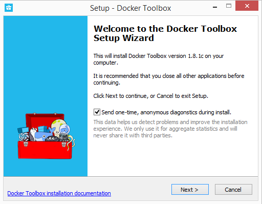
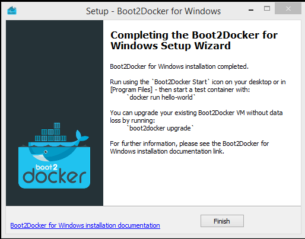
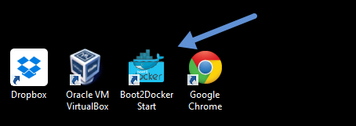

Install Docker for Windows
Windows users use Docker Toolbox to install Docker software. Docker Toolbox includes the following Docker tools:
- Docker CLI client for running Docker Engine to create images and containers
- Docker Machine so you can run Docker Engine commands from Windows terminals
- Docker Compose for running the
docker-composecommand - Kitematic, the Docker GUI
- the Docker QuickStart shell preconfigured for a Docker command-line environment
- Oracle VM VirtualBox
Because the Docker Engine daemon uses Linux-specific kernel features, you can’t
run Docker Engine natively in Windows. Instead, you must use the Docker Machine
command, docker-machine, to create and attach to a small Linux VM on your
machine. This VM hosts Docker Engine for you on your Windows system.
Step 1: Check your version
To run Docker, your machine must have a 64-bit operating system running Windows 7 or higher. Additionally, you must make sure that virtualization is enabled on your machine. To verify your machine meets these requirements, do the following:
Right click the windows message and choose System.

If you aren’t using a supported version, you could consider upgrading your operating system.
Make sure your Windows system supports Hardware Virtualization Technology and that virtualization is enabled.
For Windows 8 or 8.1
Choose Start > Task Manager and navigate to the Performance tab. Under CPU you should see the following:

If virtualization is not enabled on your system, follow the manufacturer’s instructions for enabling it.
For Windows 7
Run the Microsoft® Hardware-Assisted Virtualization Detection Tool and follow the on-screen instructions.
Verify your Windows OS is 64-bit (x64)
How you do this verification depends on your Windows version. For details, see the Windows article How to determine whether a computer is running a 32-bit version or 64-bit version of the Windows operating system.
Step 2: Install Docker Toolbox
In this section, you install the Docker Toolbox software and several “helper” applications. The installation adds the following software to your machine:
- Docker Client for Windows
- Docker Toolbox management tool and ISO
- Oracle VM VirtualBox
- Git MSYS-git UNIX tools
If you have a previous version of VirtualBox installed, do not reinstall it with the Docker Toolbox installer. When prompted, uncheck it.
If you have Virtual Box running, you must shut it down before running the installer.
Go to the Docker Toolbox page.
Click the installer link to download.
Install Docker Toolbox by double-clicking the installer.
The installer launches the “Setup - Docker Toolbox” dialog.
If Windows security dialog prompts you to allow the program to make a change, choose Yes. The system displays the Setup - Docker Toolbox for Windows wizard.

Press Next to accept all the defaults and then Install.
Accept all the installer defaults. The installer takes a few minutes to install all the components:
When notified by Windows Security the installer will make changes, make sure you allow the installer to make the necessary changes.
When it completes, the installer reports it was successful:

Uncheck “View Shortcuts in File Explorer” and press Finish.
Step 3: Verify your installation
The installer places Docker Toolbox and VirtualBox in your Applications folder. In this step, you start Docker Toolbox and run a simple Docker command.
On your Desktop, find the Docker Toolbox icon.

Click the icon to launch a Docker Toolbox terminal.
If the system displays a User Account Control prompt to allow VirtualBox to make changes to your computer. Choose Yes.
The terminal does several things to set up Docker Toolbox for you. When it is done, the terminal displays the
$prompt.
The terminal runs a special
bashenvironment instead of the standard Windows command prompt. Thebashenvironment is required by Docker.Make the terminal active by click your mouse next to the
$prompt.If you aren’t familiar with a terminal window, here are some quick tips.

The prompt is traditionally a
$dollar sign. You type commands into the command line which is the area after the prompt. Your cursor is indicated by a highlighted area or a|that appears in the command line. After typing a command, always press RETURN.Type the
docker run hello-worldcommand and press RETURN.The command does some work for you, if everything runs well, the command’s output looks like this:
$ docker run hello-world Unable to find image 'hello-world:latest' locally Pulling repository hello-world 91c95931e552: Download complete a8219747be10: Download complete Status: Downloaded newer image for hello-world:latest Hello from Docker. This message shows that your installation appears to be working correctly. To generate this message, Docker took the following steps: 1. The Docker Engine CLI client contacted the Docker Engine daemon. 2. The Docker Engine daemon pulled the "hello-world" image from the Docker Hub. (Assuming it was not already locally available.) 3. The Docker Engine daemon created a new container from that image which runs the executable that produces the output you are currently reading. 4. The Docker Engine daemon streamed that output to the Docker Engine CLI client, which sent it to your terminal. To try something more ambitious, you can run an Ubuntu container with: $ docker run -it ubuntu bash For more examples and ideas, visit: https://docs.docker.com/userguide/
Looking for troubleshooting help?
Typically, the above steps work out-of-the-box, but some scenarios can cause problems. If your docker run hello-world didn’t work and resulted in errors, check out Troubleshooting for quick fixes to common problems.
A Windows specific problem you might encounter has to do with the NDIS6 host network filter driver, which is known to cause issues on some Windows versions. For Windows Vista systems and newer, VirtualBox installs NDIS6 driver by default. Issues can range from system slowdowns to networking problems for the virtual machine (VM). If you notice problems, re-run the Docker Toolbox installer, and select the option to install VirtualBox with the NDIS5 driver.
Where to go next
At this point, you have successfully installed the Docker software. Leave the Docker Quickstart Terminal window open. Now, go to the next page to read a very short introduction Docker images and containers.